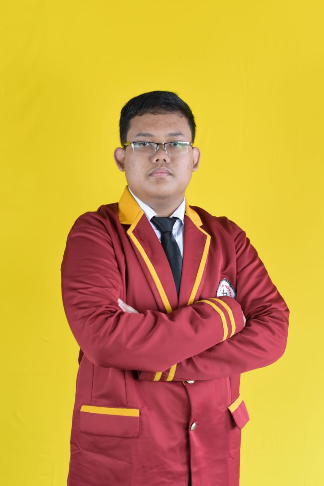

Halo, saya Rizky Rasyid Pratama.
Mahasiswa Informatika yang berfokus pada pengembangan aplikasi web, rekayasa perangkat lunak, dan pemecahan masalah berbasis teknologi modern.

Tentang Saya
Latar belakang & minat pengembangan
Saya adalah mahasiswa aktif program studi Informatika yang memiliki ketertarikan mendalam dalam pengembangan web (full-stack web development), algoritma, dan manajemen basis data.
Selama perkuliahan, saya aktif membangun berbagai proyek perangkat lunak, baik mandiri maupun tim. Saya selalu antusias untuk mempelajari teknologi baru, menulis kode yang bersih (clean code), serta merancang solusi perangkat lunak yang efisien.
Keahlian & Teknologi
Tech stack yang sering saya gunakan
Bahasa Pemrograman
- • Python
- • JavaScript
- • PHP
Web Development
- • HTML5 & CSS3
- • Node.js
Database & Tools
- • MySQL
- • Git & GitHub
- • VS Code
Proyek Pilihan
Beberapa aplikasi yang pernah saya kembangkan
Sistem Informasi Akademik Minimalis
Aplikasi web pengelolaan data mahasiswa, nilai, dan mata kuliah dengan fitur autentikasi serta role pendaftaran.
Analisis Sentimen Data Media Sosial
Program Python untuk mengklasifikasikan tanggapan publik menggunakan metode Naive Bayes dan pemrosesan teks Natural Language Processing.
Mari Bekerja Sama
Saya terbuka untuk diskusi proyek, kolaborasi riset, maupun tawaran magang. Silakan hubungi saya melalui email atau media sosial.